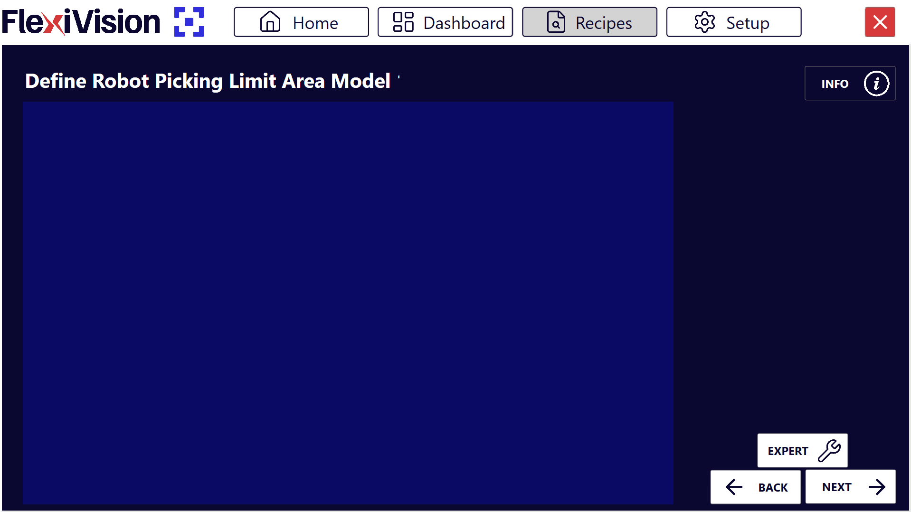
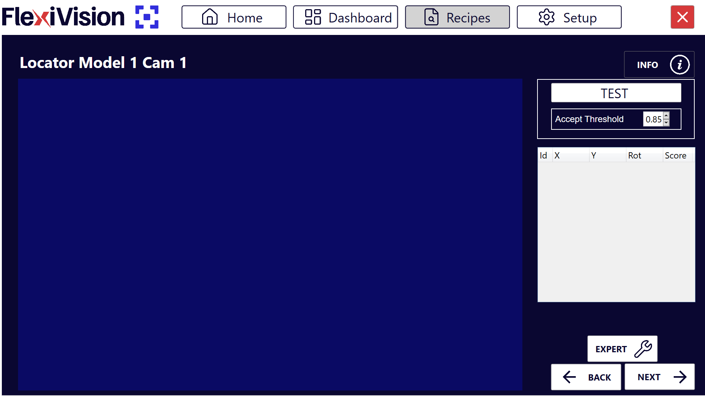

Definizione ROI e Tolleranze#
In questa sezione si procede alla definizione della Region Search (area di ricerca) e delle tolleranze di riconoscimento per il modello creato. Questi parametri determinano dove e con quale precisione FlexiVision One cercherà i componenti durante il funzionamento.
Cos’è la Region Search?
La Region Search è l’area all’interno della quale FlexiVision One cercherà e rileverà i componenti da prelevare.
Procedura#
Dopo aver cliccato “Next” nella pagina di training, si apre automaticamente la pagina Define Robot Picking Limit Area Model.

Step 1: Definizione Area#
1 |
Nella pagina Define Robot Picking Limit Area Model, modificare il riquadro per delimitare l’area di ricerca |
2 |
Una volta dimensionata correttamente la Region Search, Cliccare su |
3 |
Si aprirà la pagina Locator Model 1 Cam 1 |

Tip
Dimensiona l’area in base allo spazio effettivo di lavoro del robot, evitando zone non raggiungibili.
Panoramica interfaccia Locator Model#

Parametro |
Descrizione |
|---|---|
Test |
Esegue un test di riconoscimento in tempo reale con i parametri correnti |
Accept Threshold |
Soglia minima di fedeltà (score) che un componente deve avere per essere accettato |
Results Panel |
Pannello che mostra tutti i componenti rilevati con dettagli (Id, coordinate, score) |
Video Tutorial#
Video tutorial esplicativo dei successivi Step 2 e Step 3:
Step 2: Preparazione Scena#
4 |
Posizionare altri componenti nell’area di visione in modo casuale intorno al componente di riferimento in modo da non confonderli con esso. Warning Non toccare il componente di riferimento usato per il training! E non perderlo di vista! |
Step 3: Esecuzione Test e Accept Threshold#
5 |
Cliccare su |
6 |
Osservare quanti componenti vengono rilevati e con quali score |
7 |
Modificare l’Accept Threshold in base alle esigenze dell’applicazione Note Cos’è l’Accept Threshold? È il grado minimo di fedeltà (score) che un componente rilevato deve avere rispetto al modello di riferimento per essere accettato.
|
 per effettuare il riconoscimento
per effettuare il riconoscimentoTip
Approccio iterativo consigliato:
Iniziare con Accept Threshold = 0.85
Fare Test e osservare risultati
Se troppi pezzi accettati (inclusi falsi positivi) → Aumentare threshold (es: 0.90)
Se troppo pochi pezzi rilevati (pezzi buoni scartati) → Diminuire threshold (es: 0.80)
Ripetere fino a trovare il valore ottimale per l’applicazione
Obiettivo: Trovare il valore più alto possibile che rileva tutti i pezzi buoni ma scarta i peggiori.
Interpretazione Risultati#
Visualizzazione componenti rilevati#
Nel pannello Results vengono mostrati tutti i componenti rilevati che rispettano l’Accept Threshold:
Campo |
Tipo |
Descrizione |
|---|---|---|
Id |
Intero |
Identificativo univoco progressivo (0, 1, 2, …) |
X |
Millimetri |
Coordinata X del componente (riferimento origine della griglia di calibrazione) |
Y |
Millimetri |
Coordinata Y del componente (riferimento origine della griglia di calibrazione) |
Rotation |
Gradi |
Angolo di rotazione del componente (0-360°) |
Score |
Percentuale |
Grado di fedeltà rispetto al modello di riferimento (0.00-1.00) |
Sistema di Priorità
FlexiVision One di dafault ordina automaticamente tutti i componenti riconosciuti per score decrescente:
Id 0 → Componente con score più alto (più simile al modello di riferimento)
Id 1 → Secondo miglior componente
Id 2 → Terzo miglior componente
E così via…
Esempio interpretazione#
Supponiamo che dopo il Test appaiano questi risultati:
Id |
X |
Y |
Rotation |
Score |
|---|---|---|---|---|
0 |
125.4 |
-45.2 |
15.3° |
0.92 |
1 |
-80.1 |
32.5 |
178.5° |
0.89 |
2 |
45.7 |
110.3 |
92.1° |
0.86 |
3 |
-150.2 |
-95.7 |
45.8° |
0.83 |
Interpretazione:
Id 0: Migliore corrispondenza (92%), sarà prelevato per primo
Id 1: Buona corrispondenza (89%), seconda opzione
Id 2: Corrispondenza discreta (86%), terza opzione
Id 3: Corrispondenza accettabile (83%), quarta opzione
Se Accept Threshold fosse 0.85:
Id 0, 1, 2 sarebbero accettati
Id 3 sarebbe scartato (score 0.83 < 0.85)
Finalizzazione#
Step 4: Pulizia e Proseguimento#
8 |
Rimuovere tutti i componenti dall’area, tranne il componente di riferimento e i due oggetti ai suoi lati Danger Non spostare il componente di riferimento! Anche durante la pulizia della scena, fare attenzione a non urtare o spostare il componente di riferimento. Le sue coordinate sono ancora necessarie per la calibrazione robot nella fase finale. |
9 |
Cliccare su |
See also
Procedi alla Configurazione Clearances per definire le aree libere.